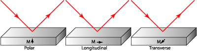

Magneto-optics is the study of effects arising from the interaction of light with magnetized media. Initially linearly polarized light, after interaction with such materials, can exhibit both ellipticity and a rotation of the polarization state. These effects are generally catagorized into two phenomena, the Faraday Effect which occurs when electro-magnetic radiation is transmitted through a magnetized media, and the Kerr Effect which deals with reflections from the magnetized media. The Magneto-Optical Kerr Effect (MOKE) is further catagorized by the direction of the magnetization vector with respect to the reflection surface and the plane of incidence.
The following illustration shows the three different geometries for MOKE experiments.

If the magnetization vector is perpendicular to the reflection surface and parallel to the plane of incidence, the effect is called the polar Kerr effect. As a matter of simplification, near normal incidence is usually employed when doing experiments in the polar geometry. In the longitudinal effect the magnetization vector is parallel to both the reflection surface and the plane of incidence. When the magnetization is perpendicular to the plane of incidence and parallel to the surface it is said to be in the transverse configuration.
Michael Faraday discovered the first magneto-optic effect in 1845. He found that the effect of magnetic field applied to a glass specimen was to rotate the polarization plane of transmitted light. Thirty-two years later (1877) John Kerr discovered this effect when examining the polarization of light reflected from a polished electromagnet pole. The magneto-optic (MOKE) effect has been utilized to study magnetic material properties, for modulation or control of light, and for detection of magnetic field. The application of the Kerr effect to study surface magnetism was introduce in 1985 along with the acronym SMOKE to denote the surface magneto-optic Kerr effect.
Magneto-optics is a branch of modern optics known for its applications in an expanding area of magneto-optical recording media. Another application of at least comparable importance is the magneto-optic monitoring and sensing of thin film and nanostructure magnetism. Light interacting with the structures carries useful information about magnetic ordering, which is essential for both fundamental magnetism research and future applications in spintronics. Magneto-optic ellipsometry is a generalization of the classical ellipsometry to films showing additional magnetically induced anisotropy and gyrotropy. Optical permittivity tensor of such a medium therefore includes components depending on magnetization orientation. Consequently linearly polarized light reflecting and transmitting by structure with magnetic ordering changes its polarization state, which is known as magneto-optic Kerr and Faraday effects. Induced polarization rotation and ellipticity are modeled using appropriate matrix formalism for anisotropic multilayers.